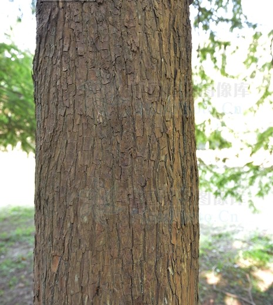
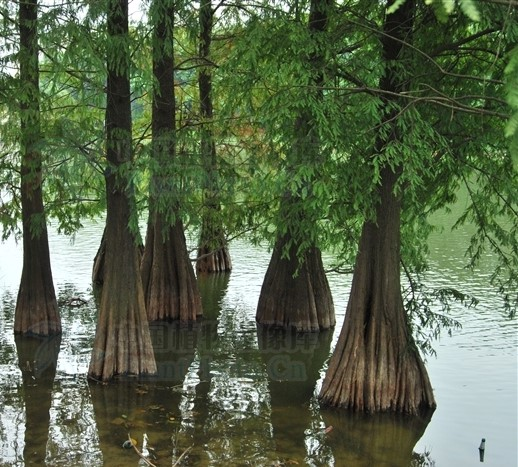
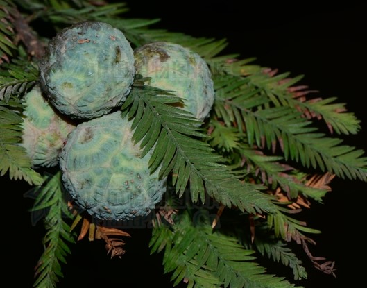

学名 |
科属 |
别名 |
|---|---|---|
Taxodium distichum (L.) Rich. |
杉科 落羽杉属 |
落羽松 |
落叶乔木，在原产地高达50米，胸径可达2米；树干尖削度大，干基通常膨大，常有屈膝状的呼吸根；树皮棕色，裂成长条片脱落；枝条水平开展，幼树树冠圆锥形，老则呈宽圆锥状；新生幼枝绿色，到冬季则变为棕色；生叶的侧生小枝排成二列。叶条形，扁平，基部扭转在小枝上列成二列，羽状，长1-1.5厘米，宽约1毫米，先端尖，上面中脉凹下，淡绿色，下面黄绿色或灰绿色，中脉隆起，每边有4-8条气孔线，凋落前变成暗红褐色。雄球花卵圆形，有短梗，在小枝顶端排列成总状花序状或圆锥花序状。球果球形或卵圆形，有短梗，向下斜垂，熟时淡褐黄色，有白粉，径约2.5厘米；种鳞木质，盾形，顶部有明显或微明显的纵槽；种子不规则三角形，有锐棱，长1.2-1.8厘米，褐色。球果10月成熟。
原产北美东南部，耐水湿，能生于排水不良的沼泽地上。我国广州、杭州、上海、南京、武汉、庐山及河南鸡公山等地引种栽培，生长良好。
树形优美，是庭园绿化的好材料。根及叶鞘纤维入药。它的叶子还能用来捆绑包好的粽子，很结实。
棕竹喜欢湿润的环境，所以浇水是必须的，但一定要适量，过多的水分会让根腐烂。夏季要适当遮阴，不要让太热烈的阳关灼伤它。
XXXXXXX
XXXXXXX
XXXXXXX
XXXXXXX
XXXXXXX